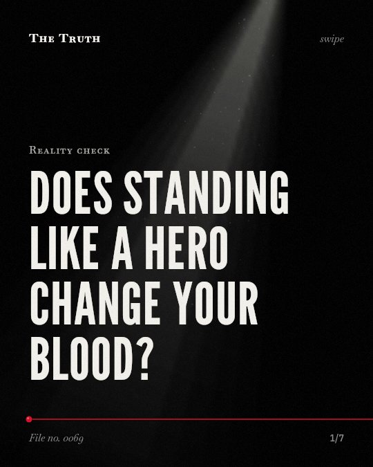

Reality check
Does standing like a hero change your blood?

Power posing does not change your hormones.
The distribution of p-values from 33 studies is indistinguishable from what is expected if the average effect size were zero.
Established. Several studies combined, or official data. The evidence is mixed.
What the research found
The distribution of p-values from 33 studies is indistinguishable from what is expected if the average effect size were zero.
“The distribution of p-values from those 33 studies is indistinguishable from what is expected if (1) the average effect size were zero, and (2) selective reporting (of studies and/or analyses) were solely responsible for the significant effects that are published.”
Experiment, 2017. Simmons & Simonsohn, Psychological Science.
When the analysis is restricted to participants unfamiliar with the effect, the meta-analysis yields evidence that is only moderate.
“However, when the analysis is restricted to participants unfamiliar with the effect, the meta-analysis yields evidence that is only moderate.”
Meta-analysis, 2017. Gronau et al., Comprehensive Results in Social Psychology.
The existing evidence is too weak to justify a search for moderators or to advocate for people to engage in power posing to better their lives.
“the existing evidence is too weak to justify a search for moderators or to advocate for people to engage in power posing to better their lives.”
Experiment, 2017. Simmons & Simonsohn, Psychological Science.
A meta-analysis found very strong evidence for an effect of power posing on felt power.
“Our meta-analysis yields very strong evidence for an effect of power posing on felt power.”
Meta-analysis, 2017. Gronau et al., Comprehensive Results in Social Psychology.
Felt power is not biological change.
Research shows very strong evidence for power posing on felt power. However, the evidence for hormonal effects is too weak to justify using it to improve your life.
Confidence is a psychological trick.
That may be why you feel stronger after standing tall. It is a shift in your internal state, not a fundamental change in your body chemistry.
This part is our reading of the evidence, not a finding.
The mirror before a meeting.
You stand in the bathroom. You push your chest out and put your hands on your hips. You wait for a surge of chemistry that never arrives.
The honest summary
The evidence for power posing is mixed, showing a clear effect on felt power but failing to provide robust evidence for hormonal changes or practical benefits.
The findings are complicated by the fact that effects may be stronger in participants who are already familiar with the power posing concept.
Are you looking for a shortcut that doesn't exist?
Sources
- Quentin F. Gronau, Sara van Erp, Daniel W. Heck et al. (2017). A Bayesian model-averaged meta-analysis of the power pose effect with informed and default priors: the case of felt power. Comprehensive Results in Social Psychology. Meta-analysis, cited 163 times.
- Joseph P. Simmons, Uri Simonsohn (2017). Power Posing: P- Curving the Evidence. Psychological Science. Experiment, cited 159 times.
Also read for this file, not quoted
- Hussain et al. (2015). Missing data in randomized controlled trials testing palliative interventions pose a significant risk of bias and loss of power: a systematic review and meta-analyses.
- Jackson & Turner (2017). Power analysis for random‐effects meta‐analysis.
- McShane et al. (2016). Adjusting for Publication Bias in Meta-Analysis.
- Lee (2015). Meta-Analysis and Quality Assessment of Randomized Controlled Trials.
This file was researched and drafted by software, then checked by rules a model cannot talk its way around: each quote above was matched word for word against the paper, and every number had to appear in it. How files are made.